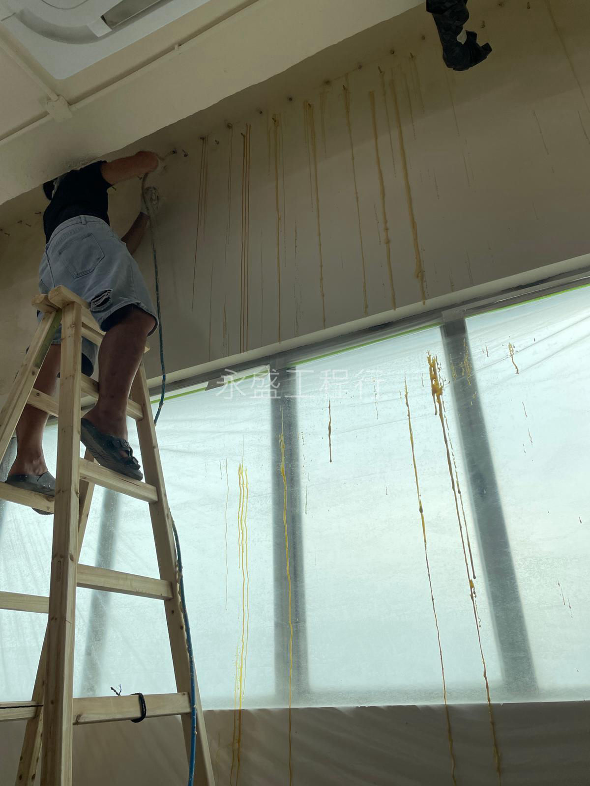

專業防水師傅正在施作高壓打針灌漿，封堵結構裂縫。
高壓打針是處理天花漏水與結構性滲漏的高效方案。我們遵循專業施工標準：
永盛工程行
WING SHING ENGINEERING COMPANY
UNIT1, 7/F, BLK D, MAI WAH IND BLDG, KWAI CHUNG
當建築物出現結構性裂縫，或者水份從無法直接接觸的迎水面滲入時，高壓打針灌漿（俗稱防水打針）便成為最有效的防漏手段。作為香港領先的防水公司，永盛工程行在打針防水領域擁有多年實戰經驗。本文將帶您深入了解這項精密技術的原理、流程與適用場景。
高壓灌漿是一種將專業化學灌漿材料（通常為聚胺酯 Polyurethane, 簡稱 PU）透過機械高壓注入建築結構裂縫的技術。這種材料具有獨特的遇水膨脹特性，接觸水份後能迅速膨脹並填滿細微空隙，形成強韌且具彈性的防水屏障。對於天花漏水、電梯坑滲水、地庫裂縫或窗台漏水等問題，防水打針是極佳的防漏工程方案。
打針防水看似簡單，實則蘊含深厚的物理知識與材料學經驗。一名非專業的裝修師傅若操作不當，不僅無法止漏，更可能因壓力失控導致結構受損。永盛的專業防水師傅具備以下優勢：
打針防水主要針對混凝土結構內部的滲漏。如果是因為外牆磁磚龜裂導致的滲水，通常需要配合外牆防水工程進行面層封閉。此外，如果滲漏源頭是防水層大面積老化（如天台防水層失效），防水打針僅能作為局部急救方案，長遠仍需考慮重做面層防水工程。
許多業主關心打針灌漿價錢。在香港市場，收費通常按針位數量或工程複雜度計算。雖然單次漏水維修的成本看似較低，但若施工不規範導致水路轉移，後續的維修費將成倍增加。永盛工程行提供透明報價，並針對打針項目提供長效防水保養，讓每一分錢都花在刀口上。如果您正在搜尋「防水公司邊間好」，專業的保固承諾是我們的信心保證。
在灌漿過程中，我們常配合紅外線漏水檢測儀器進行監控。施工前精準定位含水區域，施工後確認裂縫是否已完全封堵且結構內部濕度下降。這種數據化的防漏工程流程，確保了修復的高成功率。
高壓打針灌漿是處理頑固滲漏的「手術級」方案。如果您正面臨反覆不斷的天花漏水或牆身滲水問題，請諮詢專業的香港防水公司。永盛工程行隨時準備為您提供最專業的打針防水技術支援！